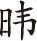

《蓬窗类纪》（《涵芬楼秘笈》本）
《蓬窗类纪》（《涵芬楼秘笈》本）此书目不是作者执笔前全部参考资料的汇集，而仅限于在注释中提到的文献。排列次序以Wade Giles拼音为序，以便与英文版并行。也有若干书籍在英文版中引用而本书未加引用，则不列在本书目内。
陈荣捷 Chan Wing-tsit英译《传习录》（Instructions for Practical Living ，纽约1963版）
陈荣捷 英译《近思录》（Reflections on Things at Hand ，纽约1967版）
《张居正书牍》（上海群学书社1917版）
张瀚 《松窗梦语》（《武林往哲遗著本》）
陈洪谟 《继世纪闻》（《纪录汇编》本）
陈洪谟 《治世余闻》（《纪录汇编》本）
陈文石 《明洪武嘉靖间的海禁政策》（台北1966版）
郑晓 《今言》（《纪录汇编》本）
郑茂 《靖海记略》（并装于《倭变事略》，台北广文书局1964版）
程宽正 《戚继光》（重庆1943版）
焦竑 《国朝献征录》（台北学生书局1965版）
焦竑 《澹园集》（金陵丛书本）
钱穆 《国史大纲》第十版（台北1966版）
戚继光 《纪效新书》（1841版）
戚继光 《止止堂集》（山东书局1888版）
戚继光 《练兵实纪》（上海商务印书馆1937版）
《金华府志》（美国国会图书馆胶卷1578版）
周玄 《泾林续记》（《涵芬楼秘笈》本）
周 《中国兵器史稿》（北京1957版）
朱谦之 《李贽：十六世纪中国反封建思想的先驱者》（武汉1956版）
朱熹 《朱子全书》（《四部丛刊本》）
朱熹 《朱子语类》（长沙商务1937版）
朱国桢 《涌幢小品》（北京中华书局1959版）
朱东润 《张居正大传》（武汉1957版）
朱元璋 《皇明祖训》（辑于《明朝开国文献》内，台北学生书局1966版）
朱元璋 《大诰》（同上，台北学生书局1966版）
瞿同祖 Ch'ü T'ung-tsu，Local Government in China under the Ch'ing （Cambridge，Mass.，1962版）
de Bary，W.T.，Self and Society in Ming Thought （纽约1970版）
de Bary，W.T.，Sources of Chinese Tradition （纽约1964版）
D'Elia，Pasquale M.，Fonti Ricciane （罗马1942及1949版）
傅衣凌 《明清时代商人及商业资本》（北京1956版）
富路特 Goodrich，L. Carrigton及房兆楹Fang，Chaoying.《明代名人传》（Dictionary of Ming Biography ）（纽约1976版）
Gouveia，de Antonio.Journal，富路特供给之未刊英译本
海瑞 《海瑞集》（北京1962版）
贺仲轼 《两宫鼎建记》（《丛书集成》本）
何良俊 《四友斋丛说摘抄》（《纪录汇编》本）
何良臣 《阵纪》（《丛书集成》本）
何炳棣 Ho，Ping-ti，The Ladder of Success in Imperial China ：Aspects of Social Mobility ，1368 ～1911 （纽约1962版）
席书、朱家相 《漕船志》（《玄览堂丛书》本）
《熹宗实录》 （台北1967版）
项梦原 《冬官纪事》（《丛书集成》本）
萧公权 Hsiao，Kung-Chuan，Rural China ：Imperial Control in the Nineteenth Century （西雅图1960版）
《孝宗实录》（台北1965版）
谢承仁、宁可 《戚继光》（上海1961版）
谢国桢 《明清之际党社运动考》（上海1935版）
《宪宗实录》（台北1964版）
《新中国考古的收获》（北京1962版）
徐孚远等辑 《皇明经世文编》（台北国风出版社1964版）
徐学聚 《嘉靖东南平倭通录》（辑于《倭变事略》，台北1964版）
《宣宗实录》（台北1964版）
黄仁宇 Huang，Ray“Military Expenditures in Sixteenth Century Ming China.”Oriens Extremus 17（1970）：1～2.
黄仁宇 Huang，Ray，Taxation and Governmental Finance in Sixteenth-Century Ming China （剑桥1974版）
黄训辑 《皇明名臣经济录》（1551版）
黄宗羲 《明儒学案》（《四部备要》本）
黄
《蓬窗类纪》（《涵芬楼秘笈》本）
贺凯 Hucker，Charles O.“Governmental Organization of the Ming Dynasty.”Harvard Journal of Asiatic Studies 21（1958）
贺凯 Hucker，Charles O.，The Censorial System of Ming China （史丹福1966版）
贺凯 Hucker，Charles O.，The Traditional Chinese State in Ming Times ，1368 ～1644 （Tucson1961版）
Hummel，A.W.，Eminent Chinese of the Ch'ing Period （华盛顿1943及1944版）
任苍厂 《戚继光》（上海1947版）
容肇祖 《李卓吾评传》（台北《人人文库》本）
容肇祖 《明代思想史》（上海1941版）
高拱 《病榻遗言》（《纪录汇编》本）
Kierman，Frank A.，Jr.，and Fairbank，John K. Chinese Ways in Warfare （Cambridge，Mass.，1974版）
《考古》1959：7
《考古通讯》1958：7
顾炎武 《日知录集释》（《万有文库》本）
顾炎武 《天下郡国利病书》（《四部丛刊》本）
谷应泰 《明史纪事本末》（台北三民书局1956版）
《光宗实录》（台北1966版）
归有光 《归有光全集》（台北自力出版社1959版）
Kuno，Y.S.，Japanese Expansion on the Asiatic Continent （Berkeley，Calif.，1937及1940版）
李贽 《焚书》及《续焚书》（北京中华书局1975合订本）
李贽 《藏书》（北京中华书局1974版）
黎光明 《嘉靖御倭江浙主客军考》（北京1933版）
黎东方 《细说明朝》（台北1964版）
刘若愚 《酌中志》（《丛书集成》本）
陆容 《菽园杂记》（《纪录汇编》本）
鹿善继 《认真草》（《丛书集成》本）
《麻城县志》（1935版）
MacNair，H.F.，China （Berkeley，Calif.，1946版）
茅元仪 《武备志》（康熙版）
《明人传记资料索引》（台北1966版）
《明史》（台北国防研究院1963版）
孟森 《明代史》（台北1957版）
《穆宗实录》（台北1966版）
李约瑟 Needham，Joseph，Science and Civilisation in China （剑桥1954及以后各册版）
李约瑟 Needham，Joseph及黄仁宇Huang，Ray，“The Nature of Chinese Society：A Technical Interpretation.”Journal of Oriental Studies （香港）12：1～2（1974）；此文亦刊载于East and West （罗马）24：3～4（1974）
倪会鼎 《倪文正公年谱》（《粤雅堂丛书》本）
欧阳祖经 《谭襄敏公年谱》（上海1936版）
潘季驯 《河防一览》（台北学生书局1966版）
彭信威 《中国货币史》（上海1954版）
彭时 《彭文宪笔记》（《纪录汇编》本）
Reischauer，Edwin O.，及Fairbank，John K.，East Asia ：The Great Tradition （波士顿1958版）
利玛窦 Ricci，Matteo，China in the Sixteenth Century ：The Journals of Matthew Ricci ，1583 ～1610 （纽约1953版）
Samedo，C.Alvarez，The History of That Great and Renowned Monarchy of China （伦敦1655英译本）
Sansom，G.B.，A History of Japan （史丹福1958及以后各册版）
沈榜 《宛署杂记》（北京1961版）
申时行 《赐闲堂集》（美国国会图书馆胶片）
申时行 《召对录》（丛书集成本）
沈德符 《野获编》（扶荔山房1869版）
《神宗实录》（台北1966版）
《世宗实录》（台北1965版）
《顺德县志》（1585版）
《四库全书总目提要》（1930版）
苏同炳 《明代驿递制度》（台北1969版）
孙承泽 《春明梦馀录》（香港龙门书局1965版）
宋应星 《天工开物》（《人人文库》本）
《大明会典》（台北1963版）
《太祖实录》（台北1962版）
《太宗实录》（台北1963版）
邓之诚 《中华二千年史》（香港1964版）
丁易 《明代特务政治》（北京1950版）
采九德 《倭变事略》（台北1964版）
岑仲勉 《黄河变迁史》（北京1957版）
《东昌府志》（1600版）
《万历邸抄》（台北1968版）
王鏊 《震泽长语》（《纪录汇编》本）
王世贞 《嘉靖以来内阁首辅传》（台北1967版）
王世贞 《弇州山人四部稿》（世经堂刻本）
王世贞 《弇州山人续集》（世经堂刻本）
王世贞 《弇州史料后辑》（台北1965版）
韦庆远 《明代黄册制度》（北京1961版）
魏焕 《皇明九边考》（北京1936版）
文秉 《先拨志始》（《丛书集成》本）
《文物》1975：1
吴晗 《朱元璋传》（香港传记文学社翻本）
吴晗 《明代的军兵》（《中国社会经济史集刊》5：2，1937）
吴泽 《儒教叛徒李卓吾》（上海1949版）
《武宗实录》（台北1965版）
《英宗实录》（台北1964版）
俞大猷 《正气堂集》（1884版）